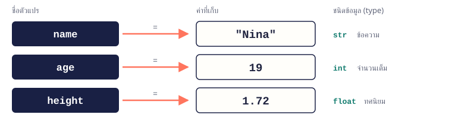
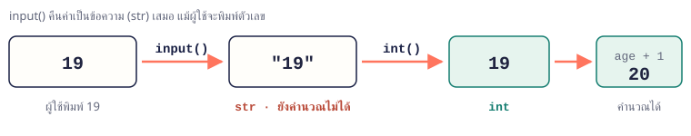

จบบทนี้แล้วทำได้เก็บค่าในตัวแปร เลือกชนิดข้อมูลให้ถูก รับตัวเลขจากผู้ใช้แล้วแปลงก่อนคำนวณ และแสดงผลให้อ่านง่าย
เนื้อหา
02.1 ตัวแปร: ตั้งชื่อให้ข้อมูล
เขียน ชื่อ = ค่า แล้ว Python จะจำค่านั้นไว้ในชื่อนั้น เครื่องหมาย = หมายถึง “เก็บค่าทางขวาไว้ในชื่อทางซ้าย” ไม่ใช่ “เท่ากับ” แบบคณิตศาสตร์ ถ้ากำหนดค่าใหม่ ค่าเดิมจะถูกแทนที่

ตัวแปร name, age, height ชี้ไปยังค่า "Nina", 19 และ 1.72 ซึ่งมีชนิด str, int และ floatname = "Nina"
age = 19
age = age + 1 # เอาค่าเดิม (19) มาบวก 1 แล้วเก็บกลับ
print(name, age)
Nina 20
จำง่าย ๆ ตั้งชื่อด้วยตัวพิมพ์เล็กคั่นด้วย _ เช่น total_price · ห้ามขึ้นต้นด้วยตัวเลข · ห้ามมีเว้นวรรค · age กับ Age เป็นคนละชื่อ
02.2 ชนิดข้อมูลพื้นฐาน 4 ชนิด
ทุกค่ามีชนิด (type) ซึ่งบอกว่าค่านั้นทำอะไรได้ เช่น ตัวเลขนำมาบวกกันได้ ส่วนข้อความนำมาต่อกันได้ ใช้ type(ค่า) เพื่อตรวจว่าค่าเป็นชนิดอะไร
| ชนิด | ตัวอย่าง | ใช้เก็บ |
|---|
int | 19, -5, 0 | จำนวนเต็ม เช่น อายุ จำนวนชิ้น |
float | 1.72, 65.5 | จำนวนทศนิยม เช่น ราคา ส่วนสูง |
str | "Nina", "19" | ข้อความ ต้องอยู่ในเครื่องหมายคำพูด |
bool | True, False | ค่าจริง/เท็จ เช่น ลงทะเบียนแล้วหรือยัง |
print(type(19))
print(type(1.72))
print(type("19"))
print(type(True))
<class 'int'>
<class 'float'>
<class 'str'>
<class 'bool'>
จำง่าย ๆ 19 กับ "19" ไม่เหมือนกัน ตัวแรกเป็นตัวเลข ตัวหลังเป็นข้อความ เพราะมีเครื่องหมายคำพูดครอบ
02.3 แปลงชนิดข้อมูล
ใช้ int(), float() และ str() แปลงค่าจากชนิดหนึ่งไปเป็นอีกชนิด ต้องใช้บ่อยมากเมื่อรับตัวเลขจากผู้ใช้
| คำสั่ง | ผลลัพธ์ | หมายเหตุ |
|---|
int("19") | 19 | ข้อความ → จำนวนเต็ม |
float("65.5") | 65.5 | ข้อความ → ทศนิยม |
str(19) | "19" | ตัวเลข → ข้อความ |
int(3.9) | 3 | ตัดทศนิยมทิ้ง ไม่ปัดขึ้น |
int("3.5") | ValueError | ข้อความที่มีจุดทศนิยมต้องใช้ float() |
price = float("65.5")
qty = int("3")
print(price * qty)
print("อายุ " + str(19) + " ปี")
196.5
อายุ 19 ปี
02.4 รับค่าด้วย input()
input("คำถาม") แสดงคำถาม แล้วรอผู้ใช้พิมพ์และกด Enter ค่าที่ได้เป็น str เสมอ แม้ผู้ใช้จะพิมพ์ตัวเลข ดังนั้นถ้าจะนำไปคำนวณต้องแปลงก่อน

ผู้ใช้พิมพ์ 19 → input() ได้ "19" (str) → int() ได้ 19 (int) → age + 1 ได้ 20name = input("ชื่อของคุณ: ")
age = int(input("อายุ: "))
print("สวัสดี", name)
print("ปีหน้าคุณจะอายุ", age + 1, "ปี")
ชื่อของคุณ: Nina
อายุ: 19
สวัสดี Nina
ปีหน้าคุณจะอายุ 20 ปี
จำง่าย ๆ รับตัวเลขให้ใช้รูปแบบ int(input(...)) หรือ float(input(...)) เสมอ
02.5 แสดงผลด้วย print() และ f-string
print() แสดงหลายค่าได้โดยคั่นด้วย , และจะเว้นวรรคให้อัตโนมัติ ถ้าต้องการผสมข้อความกับค่าให้อ่านง่าย ให้ใช้ f-string โดยขึ้นต้นข้อความด้วย f แล้ววางตัวแปรไว้ใน { }
| เขียนใน { } | ตัวอย่าง | ผลลัพธ์ |
|---|
{x} | f"รวม {total}" | รวม 196.5 |
{x:.2f} ทศนิยม 2 ตำแหน่ง | f"{total:.2f}" | 196.50 |
{x:,} คั่นหลักพัน | f"{1500000:,}" | 1,500,000 |
{x:>8} ชิดขวา กว้าง 8 ช่อง | f"[{42:>8}]" | [ 42] |
item = "กาแฟ"
price = 65.5
qty = 3
total = price * qty
print(item, qty, "แก้ว")
print(f"{item} {qty} แก้ว รวม {total:.2f} บาท")
print("A", "B", "C", sep="-")
กาแฟ 3 แก้ว
กาแฟ 3 แก้ว รวม 196.50 บาท
A-B-C
จำง่าย ๆ sep= เปลี่ยนตัวคั่นระหว่างค่า (ปกติคือเว้นวรรค) · end= เปลี่ยนสิ่งที่ปิดท้าย (ปกติคือขึ้นบรรทัดใหม่)
02.6 ข้อผิดพลาดที่เจอบ่อย
เมื่อโปรแกรม error ให้อ่านบรรทัดสุดท้ายของข้อความก่อน บรรทัดนั้นจะบอกชนิดของ error และสาเหตุ
| Error | เกิดจาก | แก้โดย |
|---|
TypeError: can only concatenate str (not "int") to str | "อายุ " + 19 เอาข้อความไปต่อกับตัวเลข | ใช้ f-string หรือ str(19) |
TypeError เมื่อนำค่าจาก input() ไปคำนวณ | ลืมแปลง เช่น input() + 1 | ครอบด้วย int() หรือ float() |
ValueError: invalid literal for int() | int("3.5") หรือผู้ใช้พิมพ์ตัวอักษร | ใช้ float() หรือตรวจค่าที่พิมพ์ |
NameError: name 'Age' is not defined | สะกดชื่อตัวแปรผิด หรือตัวพิมพ์เล็ก/ใหญ่ไม่ตรง | ใช้ชื่อให้ตรงกับตอนกำหนดค่า |
ตัวอย่างโปรแกรม
ตัวอย่าง 02.1 · บัตรแนะนำตัว
รับข้อมูล 3 ค่า แล้วจัดผลลัพธ์เป็นบัตรด้วย f-string
Python sourcename = input("ชื่อ: ")
major = input("สาขา: ")
year = int(input("ชั้นปี: "))
print("-" * 26)
print(f"ชื่อ : {name}")
print(f"สาขา : {major}")
print(f"ชั้นปี : {year} (อีก {4 - year} ปีจบ)")
print("-" * 26)
Output · ค่าที่ผู้ใช้พิมพ์แสดงต่อท้ายคำถามชื่อ: Nina
สาขา: Computer Science
ชั้นปี: 2
--------------------------
ชื่อ : Nina
สาขา : Computer Science
ชั้นปี : 2 (อีก 2 ปีจบ)
--------------------------
อธิบาย- ชื่อและสาขาเป็นข้อความอยู่แล้ว จึงใช้ค่าจาก
input() ได้ทันที - ชั้นปีต้องนำไปลบ จึงแปลงด้วย
int() "-" * 26 คือการทำซ้ำข้อความ 26 ครั้ง ใช้วาดเส้นคั่น- ใน
{ } ของ f-string ใส่การคำนวณได้ เช่น {4 - year}
ตัวอย่าง 02.2 · คิดเงินร้านกาแฟ
รับราคา (มีทศนิยม) และจำนวน (จำนวนเต็ม) แล้วคำนวณยอดพร้อม VAT
Python sourceprice = float(input("ราคาต่อแก้ว: "))
qty = int(input("จำนวนแก้ว: "))
total = price * qty
vat = total * 0.07
print(f"ยอดสินค้า {total:,.2f} บาท")
print(f"VAT 7% {vat:,.2f} บาท")
print(f"ชำระ {total + vat:,.2f} บาท")
Output · ค่าที่ผู้ใช้พิมพ์แสดงต่อท้ายคำถามราคาต่อแก้ว: 65.5
จำนวนแก้ว: 3
ยอดสินค้า 196.50 บาท
VAT 7% 13.76 บาท
ชำระ 210.25 บาท
อธิบาย- ราคามีทศนิยมจึงใช้
float() ส่วนจำนวนแก้วใช้ int() - เก็บผลระหว่างทางไว้ใน
total และ vat ทำให้อ่านและตรวจสูตรง่าย :,.2f แสดงคั่นหลักพันและทศนิยม 2 ตำแหน่ง
แบบฝึกหัดท้ายบท
เรียงจากง่ายไปยาก ลองเขียนเองให้ได้ output ตรงตัวอย่างก่อน แล้วค่อยเปิดเฉลย
ข้อ 02.1แนะนำตัวเอง★ ง่าย
เก็บชื่อ อายุ และส่วนสูงไว้ในตัวแปร แล้วแสดงเป็นประโยคเดียว
เข้าใจโจทย์- โจทย์ให้
- ชื่อ Beam, อายุ 20, ส่วนสูง 1.75 (กำหนดค่าในโค้ดได้เลย ไม่ต้องรับค่า)
- ต้องหา
- ข้อความ
Beam อายุ 20 ปี สูง 1.75 เมตร
วิธีคิด
- สร้างตัวแปร 3 ตัว: ข้อความ (
str), จำนวนเต็ม (int), ทศนิยม (float) - ใช้ f-string รวมทั้ง 3 ค่าเป็นประโยค
ตัวอย่างผลลัพธ์Beam อายุ 20 ปี สูง 1.75 เมตร
แนวคำตอบและเหตุผล
แต่ละค่าเก็บในชนิดที่ตรงกับความหมาย แล้ว f-string นำค่าทั้งหมดมาวางในประโยคเดียว โดยไม่ต้องแปลงเป็นข้อความเอง
name = "Beam"
age = 20
height = 1.75
print(f"{name} อายุ {age} ปี สูง {height} เมตร")
ข้อ 02.2ทายชนิดข้อมูล★ ง่าย
ก่อนรันโปรแกรม ให้ทายว่าค่า 42, "42", 4.2 และ False เป็นชนิดอะไร แล้วรันเพื่อตรวจคำตอบ
เข้าใจโจทย์- โจทย์ให้
- ค่า 4 ค่าในโจทย์
- ต้องหา
- ชนิดของแต่ละค่า แสดงบรรทัดละค่า
วิธีคิด
- เขียนคำตอบที่ทายไว้ก่อน
- ใช้
print(type(ค่า)) ทีละค่า - เทียบกับคำตอบที่ทาย ตัวไหนผิดให้ดูว่าเพราะอะไร
ตัวอย่างผลลัพธ์<class 'int'>
<class 'str'>
<class 'float'>
<class 'bool'>
แนวคำตอบและเหตุผล
"42" เป็น str เพราะมีเครื่องหมายคำพูดครอบ ส่วน False (F ตัวใหญ่ ไม่มีเครื่องหมายคำพูด) เป็น bool
print(type(42))
print(type("42"))
print(type(4.2))
print(type(False))
ข้อ 02.3ทักทายผู้ใช้★ ง่าย
ถามชื่อผู้ใช้ แล้วกล่าวทักทายด้วยชื่อนั้น
เข้าใจโจทย์- โจทย์ให้
- ชื่อที่ผู้ใช้พิมพ์ (ตัวอย่างพิมพ์ว่า Mali)
- ต้องหา
สวัสดี Mali ยินดีต้อนรับ!
วิธีคิด
- ใช้
input("ชื่อของคุณ: ") รับชื่อ - ไม่ต้องแปลงชนิด เพราะชื่อเป็นข้อความอยู่แล้ว
- แสดงผลด้วย f-string
ตัวอย่างผลลัพธ์ชื่อของคุณ: Mali
สวัสดี Mali ยินดีต้อนรับ!
แนวคำตอบและเหตุผล
input() คืนค่าเป็น str ซึ่งตรงกับข้อมูลที่ต้องการอยู่แล้ว จึงนำไปใส่ใน f-string ได้ทันที
name = input("ชื่อของคุณ: ")
print(f"สวัสดี {name} ยินดีต้อนรับ!")
ข้อ 02.4แปลงองศาเซลเซียสเป็นฟาเรนไฮต์★★ ปานกลาง
รับอุณหภูมิเป็นองศาเซลเซียส แล้วแปลงเป็นฟาเรนไฮต์ด้วยสูตร F = C × 9 / 5 + 32
เข้าใจโจทย์- โจทย์ให้
- อุณหภูมิ °C ที่ผู้ใช้พิมพ์ (อาจมีทศนิยม เช่น 36.5)
- ต้องหา
- อุณหภูมิ °F ทศนิยม 1 ตำแหน่ง
วิธีคิด
- รับค่าด้วย
float(input(...)) เพราะอาจมีทศนิยม - แทนค่าในสูตร
- แสดงผลด้วย
:.1f
ตัวอย่างผลลัพธ์องศาเซลเซียส: 30
30.0 °C = 86.0 °F
แนวคำตอบและเหตุผล
ถ้าใช้ int() แล้วผู้ใช้พิมพ์ 36.5 โปรแกรมจะเกิด ValueError จึงควรใช้ float() กับค่าที่อาจมีทศนิยม
celsius = float(input("องศาเซลเซียส: "))
fahrenheit = celsius * 9 / 5 + 32
print(f"{celsius} °C = {fahrenheit:.1f} °F")
ข้อ 02.5หารค่าอาหาร★★ ปานกลาง
รับยอดบิลและจำนวนคน แล้วคำนวณว่าแต่ละคนต้องจ่ายกี่บาท
เข้าใจโจทย์- โจทย์ให้
- ยอดบิล (เช่น 1250) และจำนวนคน (เช่น 4)
- ต้องหา
- เงินที่แต่ละคนต้องจ่าย แสดงทศนิยม 2 ตำแหน่ง
วิธีคิด
- ยอดบิลใช้
float() ส่วนจำนวนคนใช้ int() - นำยอดบิลหารด้วยจำนวนคน
- แสดงผลด้วย
:,.2f
ตัวอย่างผลลัพธ์ยอดบิล: 1250
จำนวนคน: 4
จ่ายคนละ 312.50 บาท
แนวคำตอบและเหตุผล
จำนวนคนเป็นจำนวนเต็มเสมอจึงใช้ int ผลจากเครื่องหมาย / เป็น float เสมอ จึงจัดทศนิยมด้วย .2f ได้เลย
bill = float(input("ยอดบิล: "))
people = int(input("จำนวนคน: "))
each = bill / people
print(f"จ่ายคนละ {each:,.2f} บาท")
ข้อ 02.6คำนวณ BMI★★ ปานกลาง
รับน้ำหนัก (กิโลกรัม) และส่วนสูง (เมตร) แล้วคำนวณ BMI = น้ำหนัก ÷ (ส่วนสูง × ส่วนสูง)
เข้าใจโจทย์- โจทย์ให้
- น้ำหนัก 60 และส่วนสูง 1.70
- ต้องหา
- ค่า BMI ทศนิยม 2 ตำแหน่ง
วิธีคิด
- รับทั้งสองค่าด้วย
float() - ใส่วงเล็บครอบ
height * height เพื่อให้คูณก่อนหาร - แสดงผลด้วย
:.2f
ตัวอย่างผลลัพธ์น้ำหนัก (kg): 60
ส่วนสูง (m): 1.70
BMI = 20.76
แนวคำตอบและเหตุผล
ถ้าไม่ใส่วงเล็บ Python จะคำนวณจากซ้ายไปขวา คือ weight / height * height ซึ่งได้ค่าเท่ากับ weight จึงผิด
weight = float(input("น้ำหนัก (kg): "))
height = float(input("ส่วนสูง (m): "))
bmi = weight / (height * height)
print(f"BMI = {bmi:.2f}")
ข้อ 02.7ใบเสร็จ 2 รายการ★★★ ท้าทาย
รับราคาและจำนวนของสมุดกับปากกา แล้วพิมพ์ใบเสร็จที่ตัวเลขชิดขวาตรงกันทุกบรรทัด
เข้าใจโจทย์- โจทย์ให้
- ราคาสมุด 42.5 จำนวน 2 · ราคาปากกา 12 จำนวน 3
- ต้องหา
- ราคาย่อยของแต่ละรายการและยอดรวม โดยตัวเลขชิดขวาในคอลัมน์เดียวกัน
วิธีคิด
- รับราคาด้วย
float() และจำนวนด้วย int() (รวม 4 ค่า) - คำนวณราคาย่อยของแต่ละรายการ แล้วรวมเป็นยอดทั้งหมด
- ใช้
{ชื่อ:<10} ให้ชื่อชิดซ้าย และ {ราคา:>8.2f} ให้ตัวเลขชิดขวา
ตัวอย่างผลลัพธ์ราคาสมุด: 42.5
จำนวนสมุด: 2
ราคาปากกา: 12
จำนวนปากกา: 3
Notebook 85.00
Pen 36.00
TOTAL 121.00
แนวคำตอบและเหตุผล
<10 จองพื้นที่ 10 ช่องแล้วชิดซ้าย ส่วน >8.2f จอง 8 ช่อง ชิดขวา และแสดงทศนิยม 2 ตำแหน่ง ทุกบรรทัดจองความกว้างเท่ากัน ตัวเลขจึงตรงกันเป็นคอลัมน์
notebook_price = float(input("ราคาสมุด: "))
notebook_qty = int(input("จำนวนสมุด: "))
pen_price = float(input("ราคาปากกา: "))
pen_qty = int(input("จำนวนปากกา: "))
notebook_total = notebook_price * notebook_qty
pen_total = pen_price * pen_qty
total = notebook_total + pen_total
print(f"{'Notebook':<10}{notebook_total:>8.2f}")
print(f"{'Pen':<10}{pen_total:>8.2f}")
print(f"{'TOTAL':<10}{total:>8.2f}")
ข้อ 02.8แก้บั๊กโปรแกรมทายอายุ★★★ ท้าทาย
โปรแกรม age = input("อายุ: ") ตามด้วย print("อีก 5 ปีคุณจะอายุ " + age + 5) รันแล้วเกิด error ให้หาสาเหตุแล้วแก้ให้ทำงานได้
เข้าใจโจทย์- โจทย์ให้
- โค้ด 2 บรรทัดที่มี error และผู้ใช้พิมพ์อายุ 19
- ต้องหา
อีก 5 ปีคุณจะอายุ 24 ปี
วิธีคิด
- รันแล้วอ่านบรรทัดสุดท้ายของ error:
TypeError - สาเหตุที่ 1:
age เป็น str จึงต้องแปลงด้วย int() ก่อนบวก 5 - สาเหตุที่ 2: นำข้อความไปต่อกับตัวเลขด้วย
+ ไม่ได้ ให้เปลี่ยนไปใช้ f-string
ตัวอย่างผลลัพธ์อายุ: 19
อีก 5 ปีคุณจะอายุ 24 ปี
แนวคำตอบและเหตุผล
บั๊กนี้มี 2 ชั้น: ค่าจาก input() เป็นข้อความ และ + ต่อข้อความกับตัวเลขไม่ได้ ถ้าแปลงเป็น int ก่อนแล้วใช้ f-string ก็แก้ได้ทั้งสองปัญหา
age = int(input("อายุ: "))
print(f"อีก 5 ปีคุณจะอายุ {age + 5} ปี")